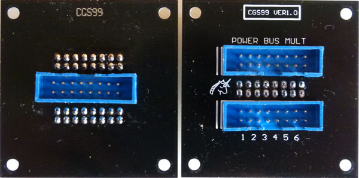
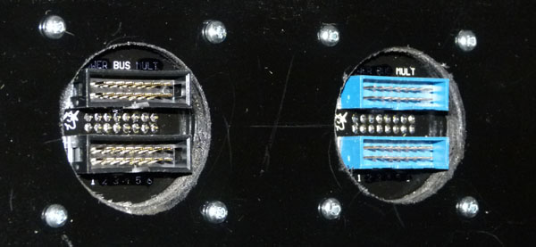
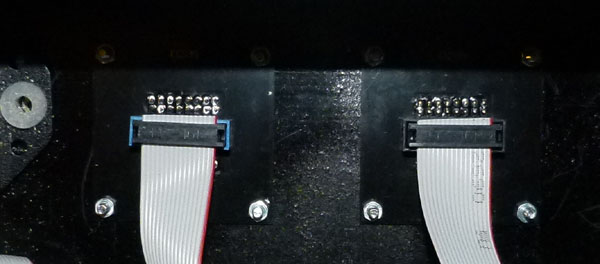
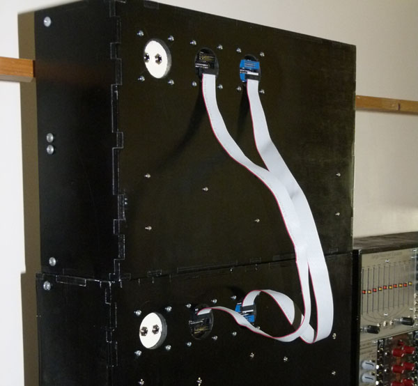

Bus expansion port for cases
The purpose of this PCB is to allow easy connection for bus modules such as the CGS93 and CGS98 to be distributed across several cases. It can also be used to connect a slave CGS73 power bus to a power supply in a different cabinet, assuming the power supply is of sufficient capacity.

|
Front and rear of the PCB. The single connector is for connection to the rear of the CGS93 or CGS98 modules. The text on the overlay can be blacked out with a marker to show the purpose of the bus.
|

|
This is the back of the case, with two ports, one used for the CGS98 (Bus) and one used for the CGS93 (Mult). The different colors were for my convenience, as I had both to hand.
|

|
The rear of the CGS99, viewed from inside the case.
|

|
The rear of two cases, with the CGS99 linked by standard 16 way IDC connectors. The unused connectors would be used to link these cases to more cases.
|
Construction
Before you start assembly, check the board for etching faults. Look for any shorts between tracks, or open circuits due to over etching. Take this opportunity to sand the edges of the board if needed, removing any splinters or rough edges.
First, solder the single connector onto the rear of the PCB, taking note of which way around the socket faces. There is a triangle molded onto these headers to indicate pin 1. The key is also marked on the PCB. Once this connector is soldered in, you can flip the PCB and solder on the other two connectors.
Note that three connectors cannot be put on the same side of the PCB.
Parts list
This is a guide only. Parts needed will vary with individual constructor's needs.
Notes:
- PCB info: 2" x 2" with 3mm mounting holes 0.15" in from the edges.
- Please e-mail me if you find any errors.
Check the PCBs for Sale page to see if I have any in stock.
Can't find the parts? See the parts FAQ to see if I've already answered the question. Also see the CGS Synth discussion group.
Article, art & design copyright 2014 by Ken Stone
Modular Synth Home Disclaimer
|